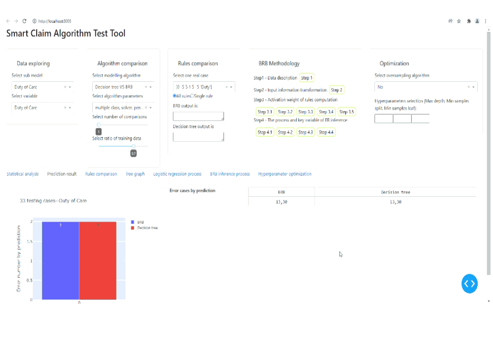
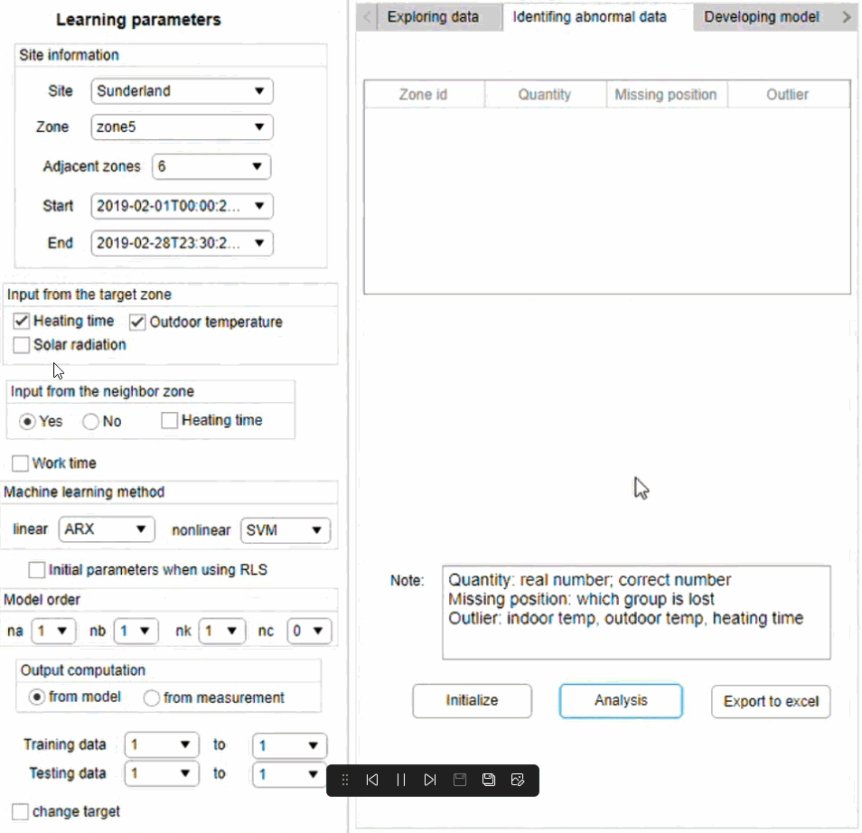
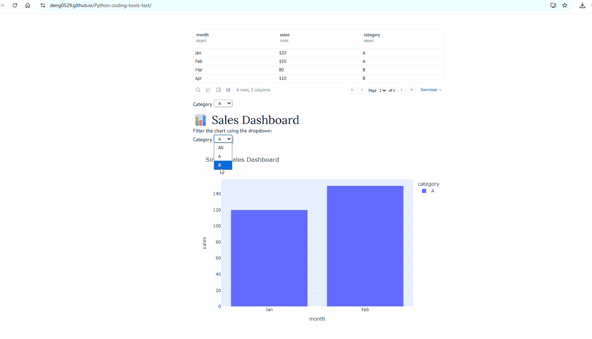
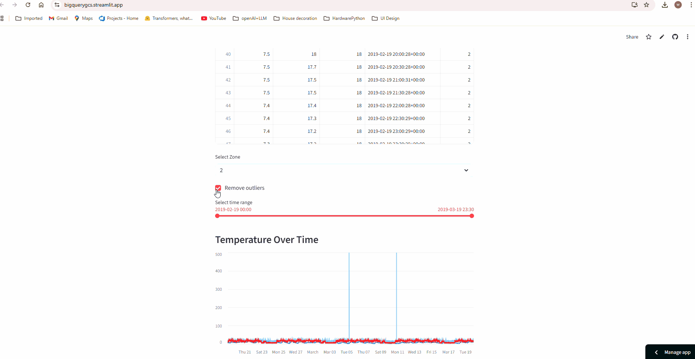

From complex data to reliable decisions and deployable solutions.
PhD in Control Theory and Control Engineering, with UK industry and university research experience in data science, intelligent decision systems, predictive modelling and optimisation. Through TECT, I develop independent research prototypes and practical AI solutions, from problem definition and modelling to interactive applications.
Open to technical roles, research collaboration and independent consulting projects.
Time series, neural networks, MPC, control systems
Data & Application Engineering
SQL, BigQuery, Streamlit, APIs, Docker
Featured R&D Projects
Independent prototypes developed through TECT, focused on practical applications of AI, decision modelling and optimisation.
Fermentation Analytics – Spectral Modelling & Predictive Process Monitoring
An applied machine learning prototype for fermentation analytics, combining spectral calibration (PLS and SVR), concentration estimation and rolling-window prediction of end-of-batch outcomes. Uses public spectral datasets and simulated fermentation batches to demonstrate predictive monitoring and early warnings.
Turns UK company filings into traceable risk insights through LLM-assisted evidence extraction and explainable Evidential Reasoning (ER) and Belief Rule Base (BRB) models.
LLMER/BRBRisk Analytics
Explainable Property Underwriting
Transforms broker submissions into structured fire and security risk assessments, combining LLM evidence extraction, explainable decision models and human review. An extensible underwriting prototype.
Energy Flexibility Optimisation & Virtual Power Plant (VPP)
Coordinates battery dispatch across five households to meet flexibility targets. Explores rule-based control and predictive optimisation, with method selection driven by operating requirements.
Battery DispatchRBCMPCOptimisation
Battery Health (SOH) & Remaining Useful Life (RUL) Prediction
Uses NASA lithium-ion degradation datasets to explore neural networks and physics-guided models for battery health estimation and lifetime forecasting.
Time SeriesNeural NetworksPhysics-guided ML
Explainable AILLMRisk Analytics
Decision TreesDashInsurance Analytics

IoTTime SeriesOptimisation

MarimoAI-assisted DevelopmentGitHub Pages

CloudDashboardsPrototyping

Work with me
I welcome opportunities in applied AI and data science, research collaboration, and commissioned technical projects. Consulting areas include predictive modelling, explainable decision support, optimisation and proof-of-concept development.